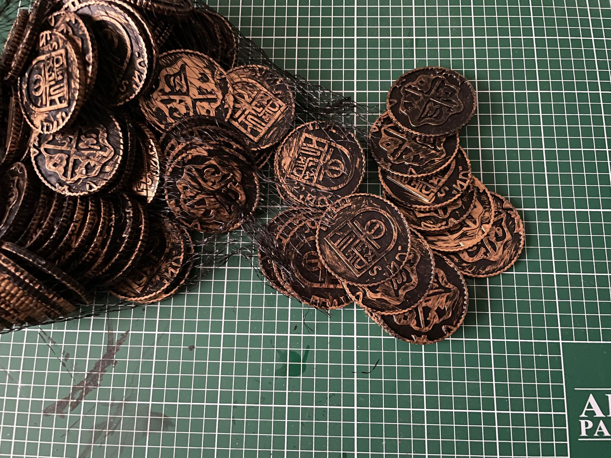

INSTRUCCIONES DE FABRICACIÓN
Para poder hacer el juego Orlog en casa se necesitan varias cosas, pero se pueden conseguir a bajo precio. Dibujar los dados y los Dioses es la parte de
trabajo más lenta y precisa, mientras que el resto es cuestión de encontrar productos similares al original en bazares y tiendas de bajo coste.
Materiales
- 12 dados blancos: Existen los dados de 6 caras blancos para que cada uno se dibuje en ellos lo que quiera. En internet o tiendas de juegos de mesa se
pueden encontrar por bajo precio.
Amazon |
Goblintrader
- Permanente fino: Fácil de encontrar en bazares o papelerías, necesitaremos un rotulador de tinta permanente y punta fina para dibujar las caras de los
dados.
- Laca: También en bazares o papelerías se puede encontrar spray de laca o esmalte para pinturas y manualidades, que le echaremos a los dados por encima
para que no se borren.
- Piedras: Necesitaremos 20 piedras en total, pero tener de reserva no es mala idea por si se pierde alguna. Yo recomiendo piedras de decoración para
macetas o para acuarios, que se pueden encontrar baratas en bazares o tiendas de animales.
Amazon |
Aliexpress
- Moneda: Cualquier moneda valdría, pero aquí veremos la elaboración de una moneda con runas vikingas hecha con masilla, también accesible en cualquier bazar.
- Tokens: Podemos utilizar también monedas reales más pequeñas que la moneda de turno, hacer tokens cuadrados con papel o cartón, o como es el caso que veremos aquí,
comprar monedas falsas.
Aliexpress
- Madera contrachapado o cartón: En papelería o bazar se puede encontrar este tipo de materiales para manualidades, que cortaremos y pintaremos para representar
cada uno de los Dioses.
- Cutter: Necesario para cortar la madera o cartón.
- Bolsa: Una bolsa de tela idealmente, algo que nos guste y encontremos bara en un bazar, nos puede servir para guardar todo el juego una vez esté terminado.
Amazon |
Etsy
Fabricación
- Los dados
Una vez hemos adquirido los dados blancos, el primer paso es empezar a pintarlos y lacarlos para que se vayan secando mientras hacemos lo demás.
Pintremos los simbolos según este esquema, asegurándonos que lo copiamos exacto, para que cada dado tenga los simbolos que le corresponden.
Utilizaremos el permanente fino, haciendo trazos cuidadosos y dejando que las caras vayan secándose, para no emborronarlo con los dedos.

- Los Dioses
Recortamos el cartón, contrachapado o similar en una forma semejante a los Dioses que aparecen en el videojuego. Con el permanente les hacemos detalles
en la cara y cuerpo para diferenciarlos. Podemos escribir su nombre y poder de activación detrás para que sea más fácil distinguirlos y recordar qué hacen exactamente.
- La moneda
Podemos utilizar cualquier moneda real, o fabricar una para el juego. En este caso, esta moneda se ha fabricado con masilla comprada en el bazar, retocada con
herramientas de escultura y pintada con pintura de modelaje. El toque de lavado negro y de brush blanco le dan el toque envejecido y brillante que necesita.
- Las piedras
Las piedras no necesitan ningún retoque extra, solo hay que elegir el tamaño adecuado y el color preferido.
- Los tokens
Los tokens si son comprados, ya sea en forma de moneda o de token cuadrado, no necesitan tampoco ningún retoque.

- La bolsa
La bolsa puede ser de cualquier tipo o calidad y puede ser comprada o fabricada por uno mismo, lo importante es que sea de un tamaño adecuado para guardar los dados,
Dioses, piedras y moneda.